- 宣伝
- アプリリリースしました。Androidの人は使ってみてね
- NaoyaさんのHbFavのAndroid版 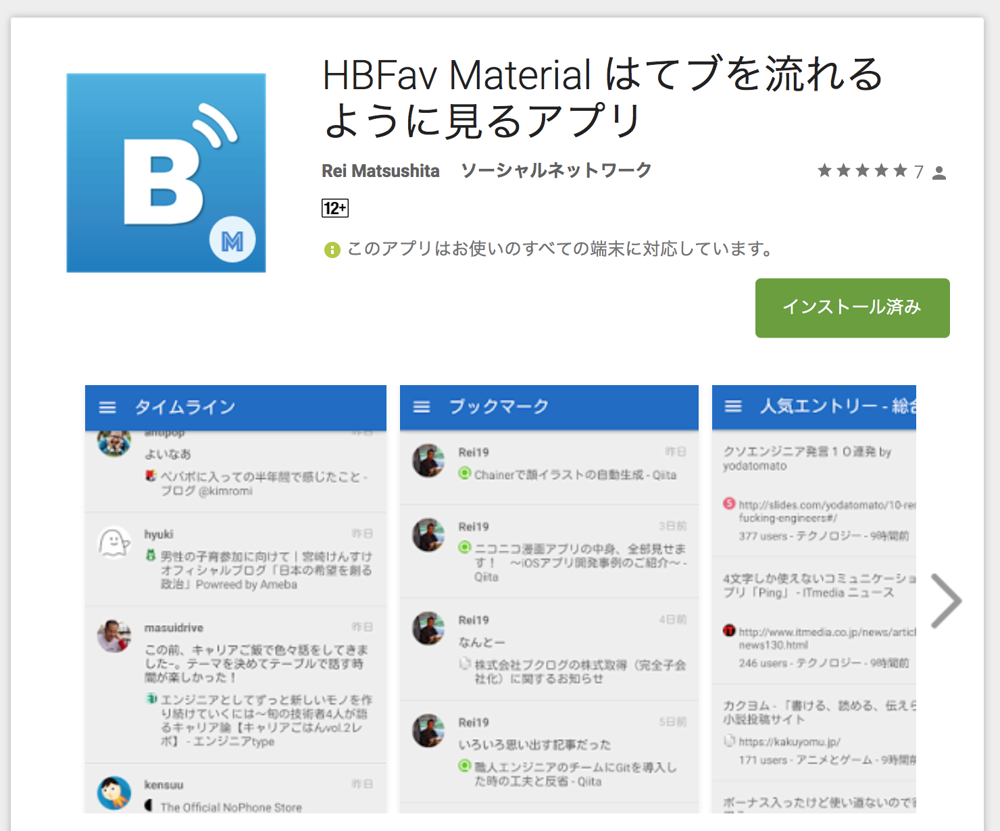
さて、みなさん
新しいサービスやサイトがオープンした時、何をしますか？
僕は。。。
僕は。。。
おもむろにソースを覗きます
view-source:https://answer.jp/
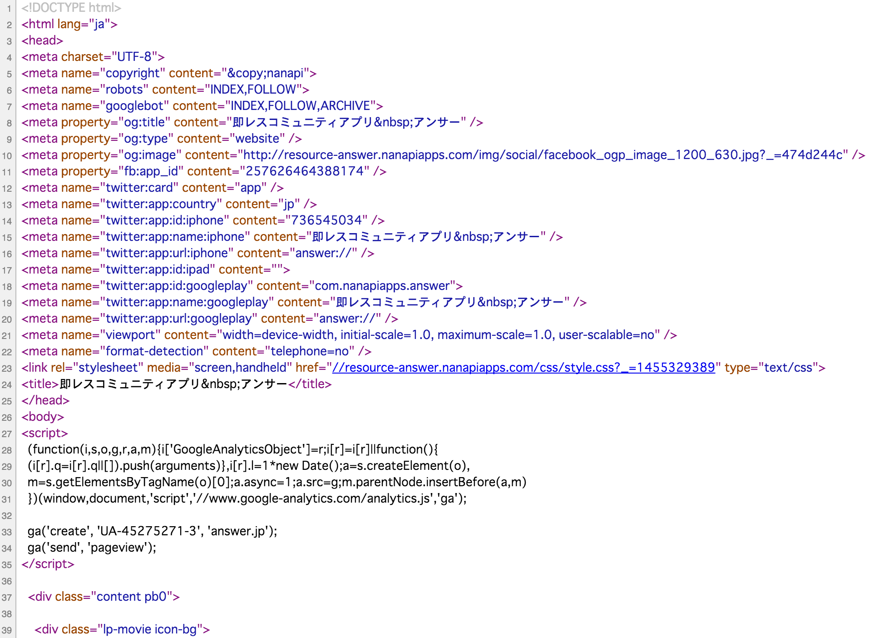
- 大抵の場合は何もない。。。
- が、まれに何かが埋まっている
view-source:https://www.mozilla.org/ja/firefox/new/
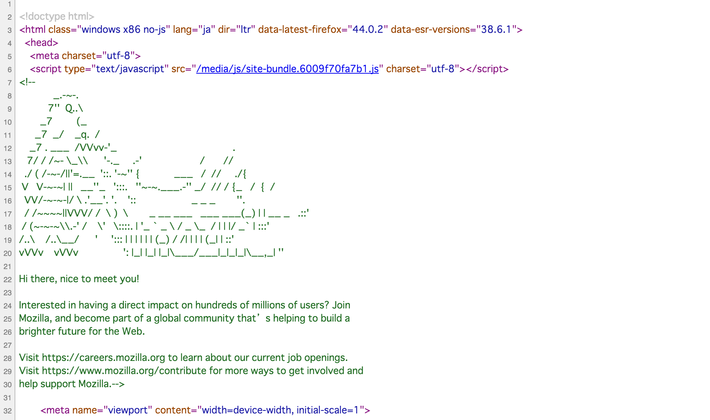
view-source:http://dotinstall.com/
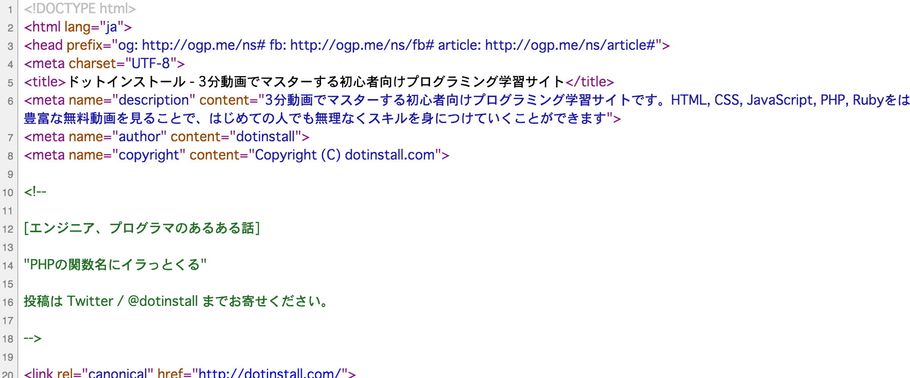
view-source:https://www.tumblr.com/
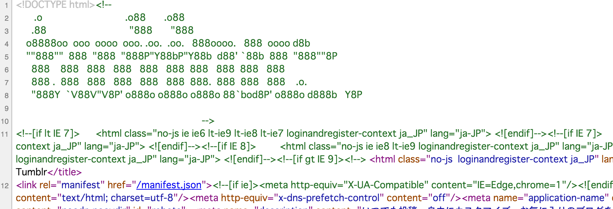
view-source:http://www.kayac.com/
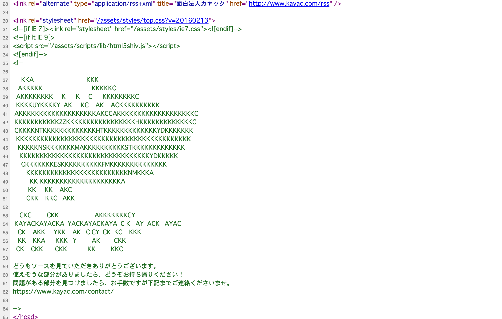
view-source:http://futuregadget-lab.com/
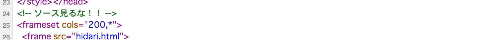
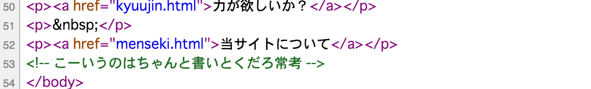
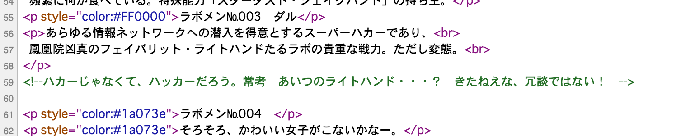
という感じでソースコードにメッセージを書いておくと面白い。ただ。。。
HTMLのソースコードをだけならエンジニアでなくてもできる。。。
エンジニアならこういうのが面白いのでは！
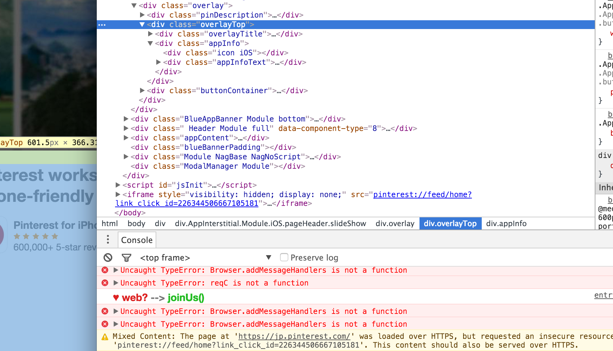
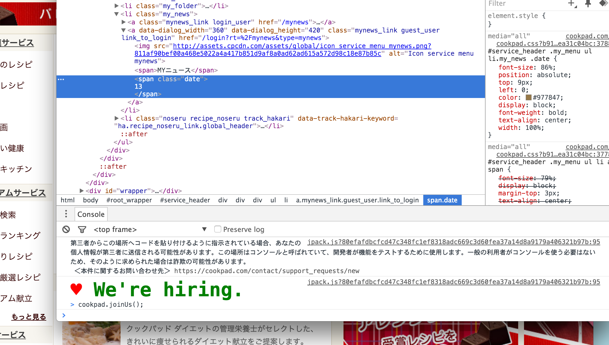
同じようなのを仕込んでみた
console.logは実はスタイルも指定できる
console.log("%c♥ web? %c--> %cjoinUs() %c👺",
"color: red; font-size: 14px",
"color: blue; font-size: 10px",
"color: green; font-size: 28px",
"color: red; font-size: 28px");
AAはasciify(npm管理下)を使うと楽に作ることができる
$ npm install -g asciify
$ asciify "Supership" -a
047: eftirobot
___ _ _
/ _) ( ) (_)
\_"-. _ _ ___ ___ __ __ | |_ _ ___
__) )( U )( o \( o_)( _)(_' ( _ )( )( o \
/___/ /___\/ __/ \( /_\ /__)/_\||/_\/ __/
|_| |_|
048: eftitalic
___
,' _/ _ __ _ __ /7 () _
_\ `. /7/7 /o|,'o/ //7 (c' / \ /7 /o|
/___,' /__/ /_,'|_( // /__)/n_/// /_,'
// //
ご清聴ありがとうございました